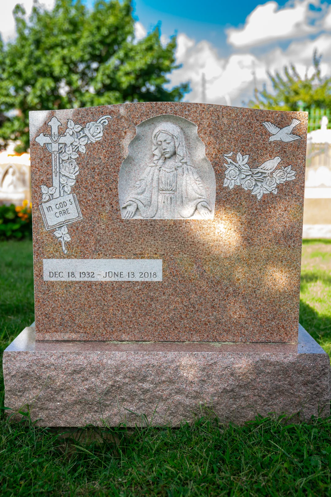

FAMILY-OWNED · QUEENS, NEW YORK
THE PEOPLE BEHIND THE WORKCrafted by hand.
Crafted by hand.
Guided by heart.
As a family-owned business, we combine skilled craftsmanship with personal attention. We take time to understand what matters to you, explain your options, and help shape a tribute that feels right.
—Personal attention—Experienced craftsmanship—Respect for every tradition
WHAT GUIDES US
How we work with every family.
We listen
Every family and every story is unique.
We guide
Clear, thoughtful help in every decision.
We preserve
Careful craftsmanship made to endure.

A FAMILY BUSINESS
Since 1975
Family-owned in Glendale, Queens, New York, close to the rear entrance of All Faiths Cemetery.
Talk with our team